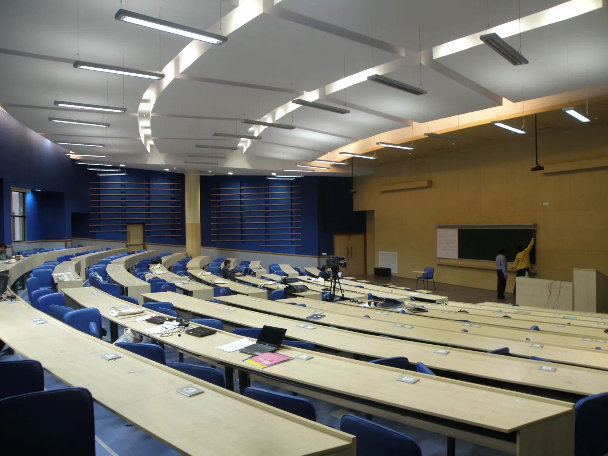

Cultural
Perform, make and communicate
Dance, dramatics, music, film and media, literary arts, photography, fine arts and speaking.
Cultural Council ↗Build · Perform · Play
Do not arrive thinking you need prior expertise. Open events and beginner sessions are designed precisely for exploration.

Three broad ecosystems
Attend a few orientations in the first month, then stay with communities whose people and work genuinely fit you.
Cultural
Dance, dramatics, music, film and media, literary arts, photography, fine arts and speaking.
Cultural Council ↗Technical
Technical clubs, student teams, labs and project groups across electronics, software, robotics and science.
Technical Council ↗Sports
Institute teams, facilities, coaching, hostel competitions and recreational sports communities.
Sports Council ↗Good starting points for physics students